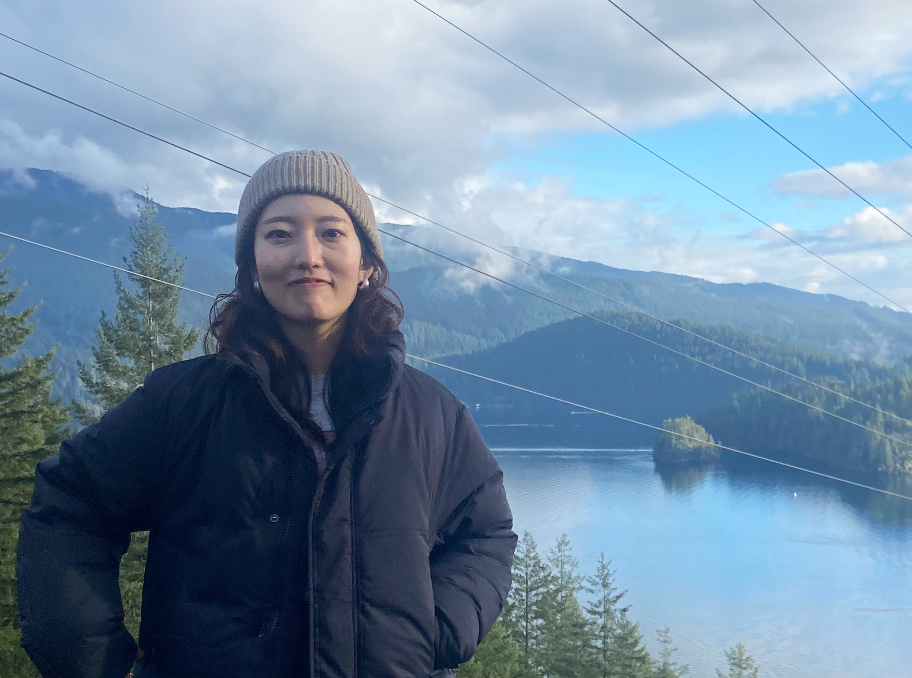
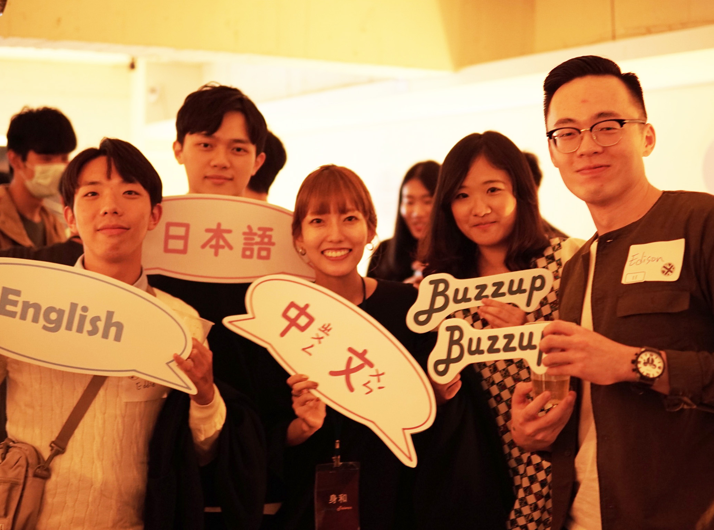

About
HELLO! & KONNNICHIWA!
I'm Miwa Katagiri
I’m a UX/UI Designer with 4+ years of experience and a background in marketing.
A career in UX/UI designing suits me. I enjoy designing, individual work and teamwork, and the flexibility to work from anywhere in the world🌍
💪 My strength lies in information-gathering for user research. I can create designs with a user-first approach, visualizing and understanding end-users’ experiences and even emotions. I believe these skills were improved by my experience living in different countries and speaking 3 languages (Japanese, English and Mandarin)
My Career so far
Launched 4 new websites, redesigned 10+ web pages, and produced 15+ banners. I can independently complete entire projects as a designer and developer, but I also can collaborate with other web developers as a web designer. My former manager praised me as the best designer on the team. I’m proud that I have never missed a deadline.
Web Design
User Research
User Flow
WireFrame
Prototyping
A/B Testing
Front-End
My Hobbies 💕
Also prioritize and cherish my time outside of work♡
-
Take A Walk
I like walking, and look for interesting restaurant, signboard. Inspiration often springs forth through taking a walk. 🚶
-
Board Game Lover
I’m a board game lover and participate in game meetups in Vancouver twice a week. Ticket to Ride is one of my favourite games. 👾🎲
-
Watch Youtube
I love watching Vlog, they give me a lot of inspiration. For example, how can I motivate myself, healthy breakfast, and learning design. 🎨
- 
Language 🗣️
Utilize language skills to study culture and design.
-
Japanese
My mother language. I love Japanese onomatopoeia and delicate expressions.
-
English
If you can speak English, you can communicate with people all over the world. I love the positive expressions unique to English.
-
Mandarin
Even a slight change in tone can completely alter the meaning. I love the clear and beautiful sound.
- 